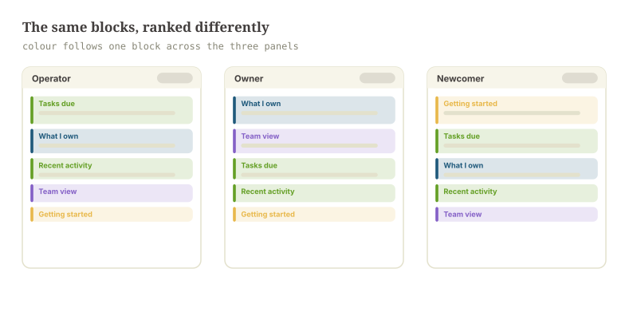
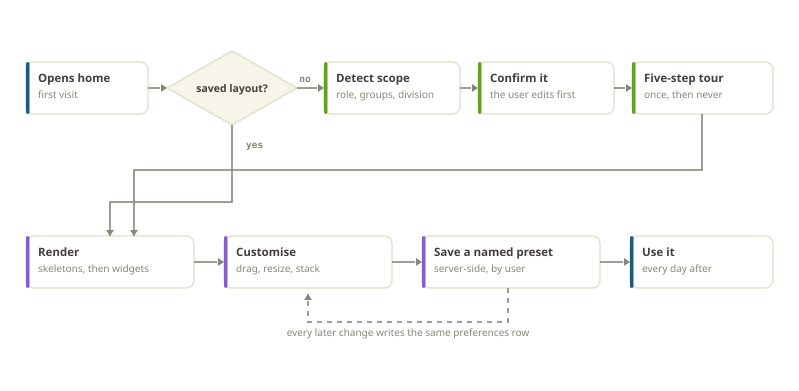
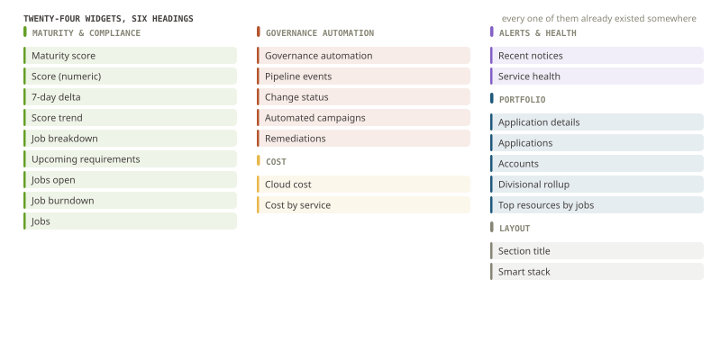
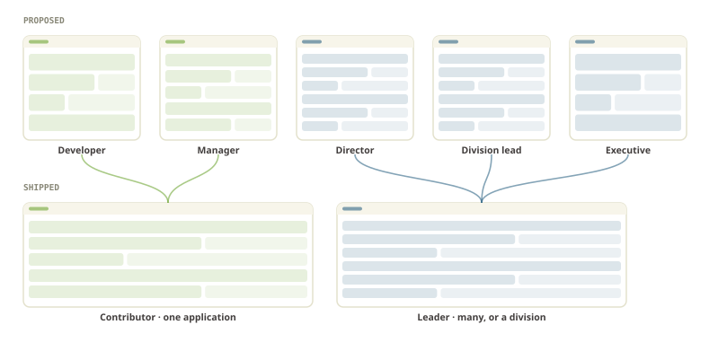
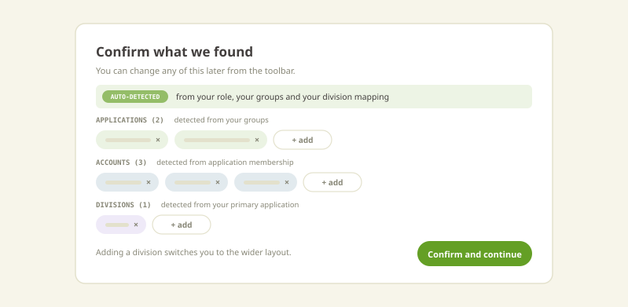
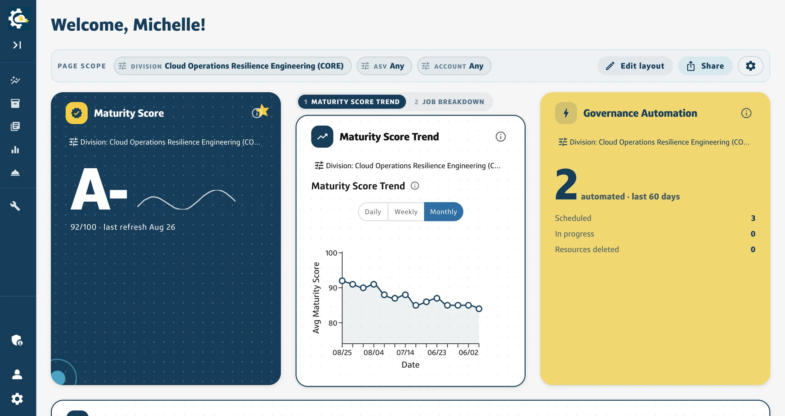
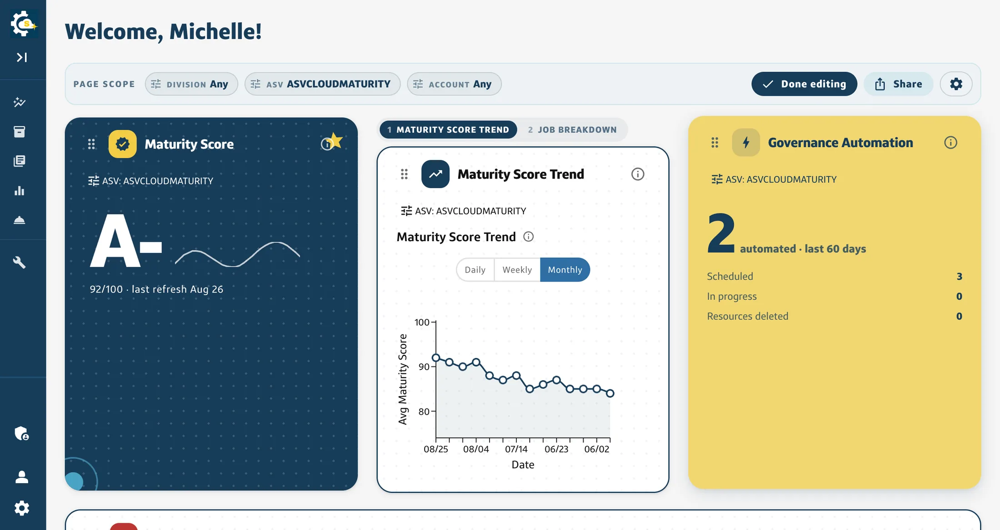
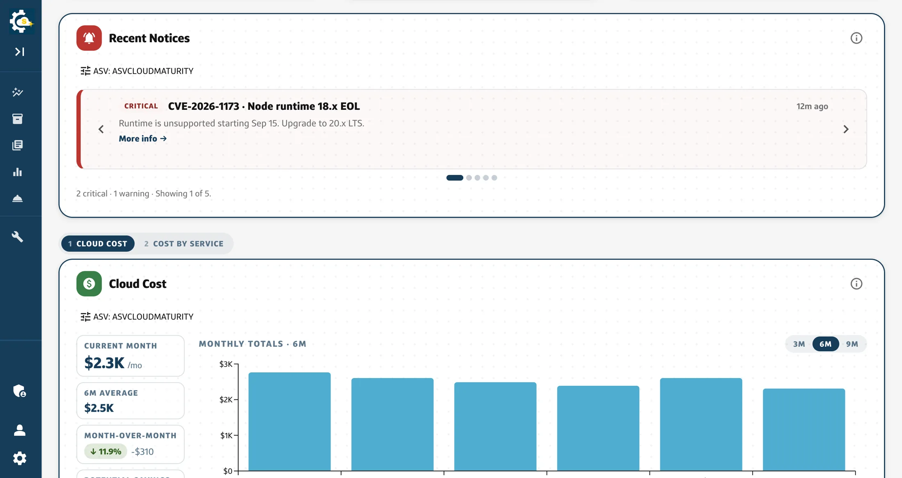

Capital One
Persona Homepage
A homepage serving several kinds of user, each of whom needs a different half of it. I picked up a proposal two teammates had shelved, researched how three other products had solved it, drew five personas, ran the workshop that cut them to two, and am now building the model, the API and the interface. This is the whole arc, in the order it happened.
A landing page nobody landed on
The people arriving at this page do not want the same things. Some own one application and want the shortest path to what it needs today. Some run a division and want the shape of all of it. They all got the same mostly-empty page, so everyone landed and immediately started filtering.
Two teammates had already written a proposal for it: configurable widget slots you pick from a dropdown, a tabbed nav in place of the dropdown menu, saved against your user id. It was shelved before it was fleshed out. Picking it up meant saying what it was missing, and I think the answer is this: it personalised by WHO you are, and the thing that actually predicts what you need is what you are responsible for.
So the direction kept their selection model and added a detected scope underneath it. The page works out what you own, shows you what it worked out, and lets you correct it before anything is saved.

Three products had already solved half of it
Before designing anything I went and used three products that already do customisable dashboards: two other internal ones and a third-party observability platform. Not for inspiration, but for the list of things that go wrong, which is much harder to get from a blank page than from somebody else’s shipped one.
The most useful finding was an anti-pattern. One of the two internal products fetches a rich user profile on load, with the role and the org and the team all in it, and then renders the same layout for everybody. All the signal, none of the branching. That is the failure this project exists to avoid, and it was already sitting there in production to be looked at.
Everything that could go on a page
The first artefact was not a layout. It was an inventory: every widget the product already had, grouped under the headings the picker would eventually use. Twenty-four of them, six categories, and not one of them new.
That constraint was deliberate and it survived the workshop intact. A first release that also invents widgets is a release where you cannot tell whether people dislike the customisation or the new content. Everything here already exists on a page somebody uses today; all this feature does is let them choose which ones and in what order.
Five wireframes came out of that list, one each for developer, manager, director, division lead and executive: a different opening hand from the same deck, with the reasoning written in the margin next to every block.

A workshop is a decision list, not a meeting
Eight of us, an hour, and a written agenda where every item was a question with its options and the argument for each already laid out. Not slides. The pre-read had the questions; the follow-up doc had the answers, in the same order, so you could see which ones moved.
The framing mattered more than the facilitation. “Are these the right five personas?” is a decision somebody can disagree with in one sentence. “Here is my design” is not. It is a thing people nod at and then quietly ignore, and the proposal I inherited had been nodded at once already.
It also set what we would NOT decide: no final visual design, no aggregation logic per widget, no production wiring. A workshop that tries to settle everything settles nothing.
Five personas became two
The proposal I inherited had five roles and the version before it had three. The workshop collapsed them to two, and the reasoning is the part worth keeping: the first release ships widgets that already exist, and five roles cannot be told apart by widgets none of them have yet. A five-way split is a promise the product cannot cash.
So there are two. Somebody scoped to one application or account, and somebody scoped to many, a division, or all of them. The finer split is written down and waiting for the role-specific widgets that would make it mean something, which is a different thing from being dropped.
The persona is also not read off a job title. It follows from a scope the user has confirmed: on a first visit the page shows what it detected and asks them to correct it before anything is saved. Applying it silently was on the table and the room turned it down, which I think was right. A page that quietly rearranges itself around a guess about you is a page you cannot argue with.

Scope is the persona
Every widget declares which scope dimensions it can answer for. Effective scope resolves widget-first, then the page, then a default from the profile, so one widget can be pinned to a single application while the rest of the page follows the division.
The interesting case is the mismatch: the page is scoped by something a widget does not accept. Two easy answers were available and both are wrong. Applying it silently makes the widget lie about what it is showing; dropping it silently makes it lie about what it was asked. So it ignores the dimension and says so on its own chip. A visible inconsistency the reader can reason about beats an invisible one they cannot.
Sizes are bounded for the same reason. At most three per widget, at most two layouts, and the compact size always shows a real number plus one piece of context: a trend, a threshold, a delta. Never a bare number, because a bare number is a thing you have to go somewhere else to understand.
Stacked behind numbered tabs, each carrying its own scope, because a column has less room than a page has widgets.
Shipping it where nobody can see it
The new homepage is a separate route behind a flag that is off in production, and the existing homepage is untouched, byte for byte. That is deliberate: this arrives as roughly forty small pull requests over a quarter, and the cost of a regression on the page everybody already uses is far higher than the cost of running two routes for three months. The team opts in by visiting the route; the architect and the tech lead review from the same place.
If the flag resolves off, or the client that evaluates it fails outright, the new route redirects to the old one. The failure mode of a half-finished homepage should be the homepage that already works, and that has to be designed rather than hoped for.
Preferences go to a table in the database that already serves this product rather than to a new service, keyed by user, holding the persona, the layout, the saved presets and whether the tour has been seen. Local storage stays as an offline cache. Syncing across devices was a requirement rather than a nicety, which is what ruled out the browser-only version that would have shipped a month sooner.
What it looks like when it opens
Three moments got mocked before any of them got built, because all three are moments where the page is about to do something on your behalf and the only question is whether you can see it coming.
The first is onboarding: what we detected, where each piece came from, and a control to remove or add any of it. The second is a five-step tour that runs once and is remembered. The third is the one nobody asks for and everybody needs: what happens when your role changes and you have unsaved edits. That one stops and makes you name what you have before it loads anything else. Discarding is allowed; discarding silently is not.


Not a job title. The page asks what you are responsible for, and the opening layout follows from the answer.
The half that is on screen today
Editing is a mode you enter rather than a state you fall into. Edit layout adds a grip to every widget, an action menu on each one, and drag handles on the right and bottom edges; nothing else about the page changes. The page you were reading is the page you are rearranging, which is the difference between customising something and being handed a configuration screen.
Underneath, the widget catalog is a typed array in code, one file per widget, validating itself at module load: duplicate identifiers and malformed scope declarations throw before anything renders. A JSON file and a server-fetched catalog were both considered and both rejected, because both turn a compile error into a runtime one and then need a fallback for the case where the catalog is missing, and a fallback catalog is a second source of truth pretending to be a safety net.

Edit mode adds a grip to each widget and changes nothing else. The page you were reading is the page you are rearranging.

Rebuilt so it can be shown
The internal captures on this page are stills, and stills are all they can be. The recording of the real thing carries a division, an application identifier and a colleague’s name in half a dozen places on every frame, several of which pass under an open menu as it moves. A figure whose safety depends on a rectangle staying put is a figure waiting to leak.
So the page is rebuilt in the open instead: same rail, same scope bar, same card grid, same edit mode, running on accounts and divisions I made up. Rebuilding it removes the question rather than managing it, and it is a better artefact anyway, because a reader can open it and drive it themselves rather than take a screenshot’s word for it. It is deployed at kiara-vong.github.io/persona-homepage and the source is on GitHub beside it.
It carries the decisions this page argues for, not just the look: each widget declares which scope dimensions it accepts, the effective scope resolves widget then page then default, and a widget the page scope cannot reach says so on its own card instead of showing numbers for a scope nobody asked for.
It is close but not complete. Real data, entitlements, server-side preferences and the wider persona split are described here rather than implemented there.
The defaults are the product
The thing I keep coming back to is that customisation is not the feature. The default is the feature, and customisation is what you offer the people the default cannot serve. If the starting layout is right for most people, very few will change it, and that is the success case rather than a sign the feature failed.
Which is why most of the work so far has been research, personas and defaults rather than settings screens. Which layout does the page open as, and how does it decide? What moves, and what is fixed because moving it would break the orientation of everyone who has learned where it is? A second workshop and two rounds of structured feedback are in the plan for exactly that, because the answer is not something I can reason my way to alone.
Write-up to follow once it ships.